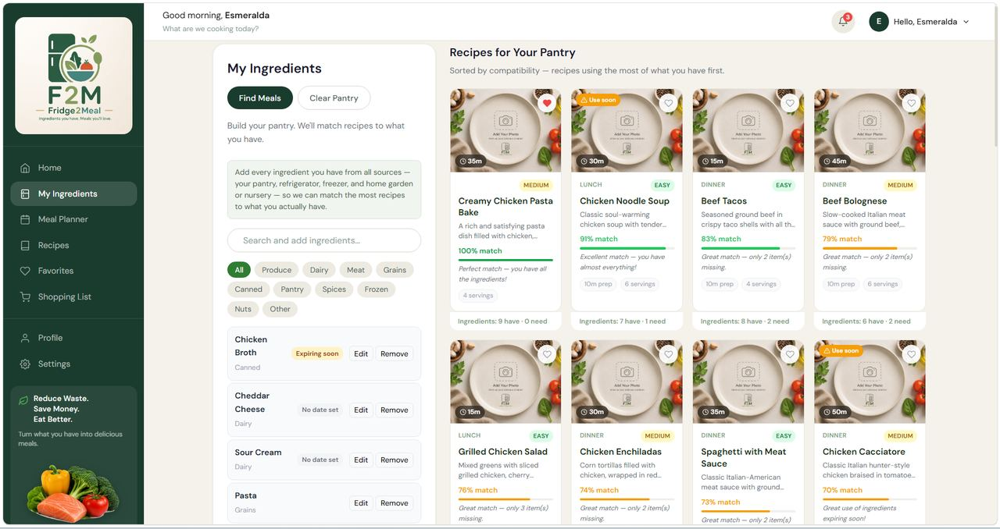
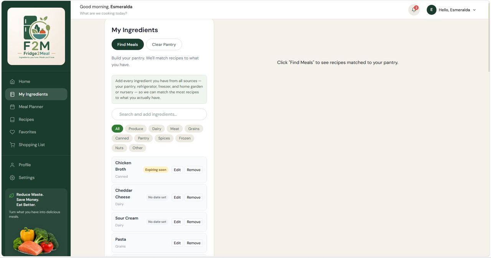
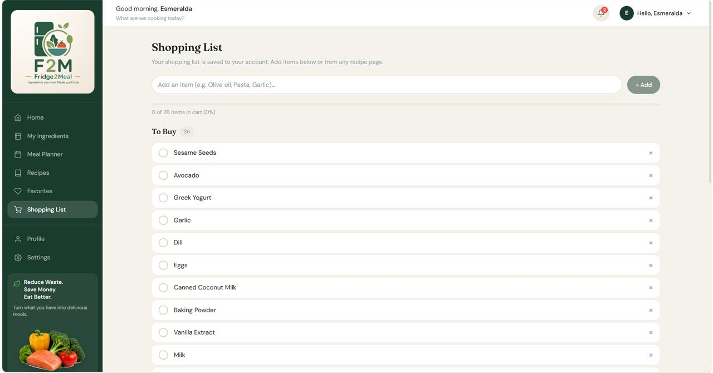
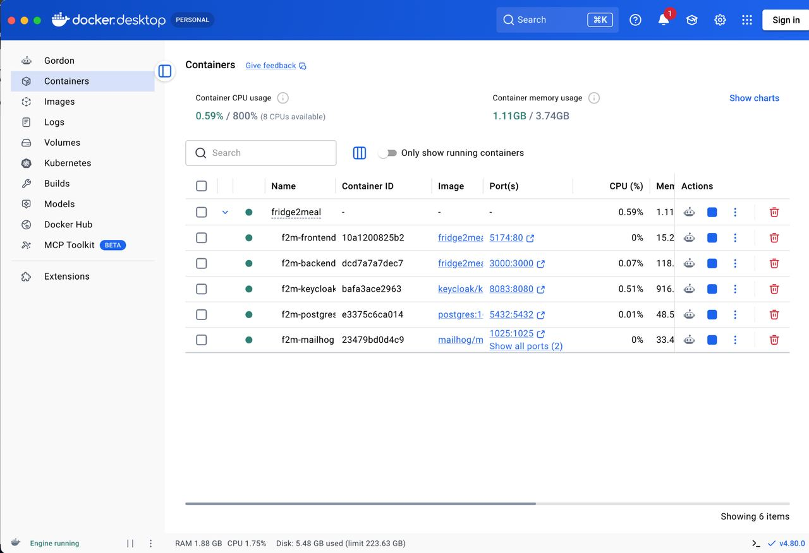

Inside Fridge2Meal: a deterministic recipe engine built to reduce food waste
Why I engineered the core matching intelligence directly in PostgreSQL and Node.js, and designed the generative AI layer to sit beside it rather than underneath it.
Roughly a third of the food produced worldwide is never eaten, and a meaningful share of that loss happens in home kitchens — ingredients bought with intention, then forgotten behind something else in the refrigerator. Fridge2Meal starts from the inventory a household already owns and works forward from there: what can you cook tonight with what is already in front of you, and what is closest to spoiling.
The fastest way to build that is to forward the pantry contents to a language model and render whatever comes back. It demos beautifully. It also produces different answers to identical questions, carries a per-request cost that scales with usage, and hands your availability to an external provider.
I made a different architectural choice, and it shaped everything downstream.

Where the intelligence lives
Every result the user depends on — which recipes match, how well they match, what is missing, what is about to spoil, what belongs on the shopping list — is computed by code and SQL I designed.
The generative AI layer sits alongside that core rather than beneath it. It lives behind a provider-agnostic service abstraction, appears in the interface as a clearly labeled supplementary section, and can be toggled off without touching a line of business logic. When it is enabled it does what generative models are genuinely good at: proposing variations, suggesting substitutions the database did not surface, and generating ideas outside the fixed corpus.
This is a layering decision, not a rejection. Generative models are excellent at open-ended suggestion and unreliable at guaranteeing that the same input produces the same ranked output. So I gave each layer the work it is actually suited to.
Determinism is a feature. The same pantry returns the same ranked results every time, whether or not an external service is reachable.
That decision is also what made the project worth building. It put real engineering problems on the table instead of letting a prompt absorb them.
Problem one: people don't type like a database
Users enter "grilled chicken," "rotisserie chicken," and "chicken breast" to mean the same thing. They pluralize inconsistently, abbreviate, and attach preparation state to the noun. Keyword matching fails on all of it.
So the first thing the engine does is stop treating ingredient text as text:
- Normalization — input is lowercased, stripped of punctuation and prep descriptors, and resolved against an alias table in PostgreSQL that maps variants onto one canonical ingredient identity
- Retrieval — normalized IDs are queried against a junction table carrying quantity, unit, optional status and importance level per row
- Scoring — each candidate is scored on seven signals rather than raw match count
- Substitution — missing items are classified as optional or critical, and a substitution table is consulted for viable replacements
- Explanation — every result returns a score, match percentage, matched list, missing lists, and a ranking rationale
That last one matters more than it sounds. The user doesn't just learn what's missing. They learn whether it actually blocks the dish.

Problem two: making "reduce food waste" an actual line of code
Pantry rows carry expiration dates. The backend derives a freshness state — fresh, expiring soon, expired, unknown — and the ranking engine reads that state directly as a scoring term.
Recipes that consume soon-to-spoil ingredients get promoted.
The product's core promise is implemented as a variable in a scoring function, not as a marketing claim on a landing page. That distinction is the whole project in miniature.
Problem three: the data model has to hold it together
I designed 16 normalized tables around one hard relationship and one hard constraint.
The relationship is many-to-many: recipes contain many ingredients, ingredients appear in many recipes, and the join carries meaning of its own — quantity, unit, optional flag, importance. That belongs in a junction table with attributes, not a denormalized array.
The constraint is isolation: pantry contents, saved recipes, meal plans, shopping lists, notifications, uploads and backups are all keyed to the authenticated user, so a query can never surface another account's data.
One decision I'd defend in any code review: AI-generated meals are stored in their own table rather than written into recipes. Keeping generated content out of the canonical corpus means the deterministic matching engine can never be contaminated by unvalidated model output.

Problem four: identity belongs to a dedicated provider
The tempting shortcut in a project like this is a users table, a password column, and a session flag in the frontend.
Instead, authentication is delegated to Keycloak as a dedicated identity provider, and the backend's job is narrowed to one thing it can do reliably: verifying a token before performing a protected action.
- OAuth 2.0 and OpenID Connect, authorization-code flow with PKCE — no client secret ever ships to the browser
- Express middleware validating JWTs on every protected route before any controller runs
- Role-based access control at the API layer, mirrored by protected routing in React — the client hides, the server enforces
- Helmet security headers, CORS restricted to an explicit allowlist, rate limiting on the AI endpoints
- Environment-variable credential management; no keys or connection strings in the repo
Authentication turned out to be the highest-risk integration in the whole system, because nearly every feature is personalized. A failure there doesn't degrade the product — it locks the user out of their pantry, plans, lists, and settings.
Problem five: can someone else actually run it?
That's the question that decides whether a project is real.
The whole stack is containerized and orchestrated with Docker Compose: React frontend, Express API, PostgreSQL, Keycloak, and MailHog for local email capture, plus mounted volumes for uploads and backups that survive teardown.
Compose makes this sound trivial. It isn't. Getting five containers to cooperate meant solving container networking, service dependency ordering, environment variable propagation, port mapping, startup races between the API and a database still initializing, first-run schema execution, and Keycloak realm import that had to complete before the backend would accept a single request.
I wrote start, stop, reset and backup-configuration scripts so the environment is reproducible and disposable. A bad state gets fixed by resetting, not by debugging someone's laptop.

The thing I built that nobody asked for
Backup and restore wasn't a required deliverable. I built it anyway, and it became one of the more demanding subsystems in the application.
Export has to gather user-scoped database rows and uploaded files into a single portable archive. Restore has to reintroduce that data without corrupting live state — from local disk or from an uploaded archive, with scheduling and retained history.
Restore is the dangerous half. It's the one operation in the product that can destroy user data if it's wrong, which is why it got disproportionate testing relative to its size.
A system that holds user data and can't give it back isn't finished.
What I tested, and what I won't claim
30 documented test cases. 100% pass rate. Zero failed or blocked.
Every case was also an integration test, because they ran against the live container stack — an authentication case exercised the frontend, Keycloak, session handling, protected routing and backend token validation simultaneously. Cases were re-run across multiple dates after builds shipped, which gave the suite a regression character.
Negative paths were tested deliberately: invalid credentials, blank input, unauthorized route access, malformed data. Duplicate pantry entries were prevented by updating the existing quantity rather than inserting a second row. Blank searches returned validation feedback rather than an empty query.
Here's what that number does not establish: behavior under concurrent load, cross-browser compatibility, penetration-level security assurance, sustained uptime, or recovery from deliberate database or identity-provider outages. This was manual testing by a single tester.
Automated unit, integration and end-to-end coverage is the first thing I'd add before this system faced real users. I'd rather say that plainly than let a 100% pass rate imply more than it earned.
What I took from it
Routing everything through a model API would have saved several weeks. It would also have produced a system with no defensible structure underneath it — nothing to reason about, tune, or explain.
The normalization engine, the weighted scoring, the junction table design, the token validation middleware, the container startup ordering: that work is where the engineering value of the project actually sits. The AI layer is more useful precisely because there is a reliable foundation for it to enhance.
The same principle carries into the cloud and automation work I do elsewhere. Decide deliberately which layer owns which guarantee, and keep the components that must be dependable independent of the components that are probabilistic by nature.
Build the reliable layer first. Enhance from there.
React · Node.js · Express · PostgreSQL · Keycloak · Docker Compose
Read the full engineering dossier →
More of my work is at esmeraldaspace.com, and I am reachable on LinkedIn.